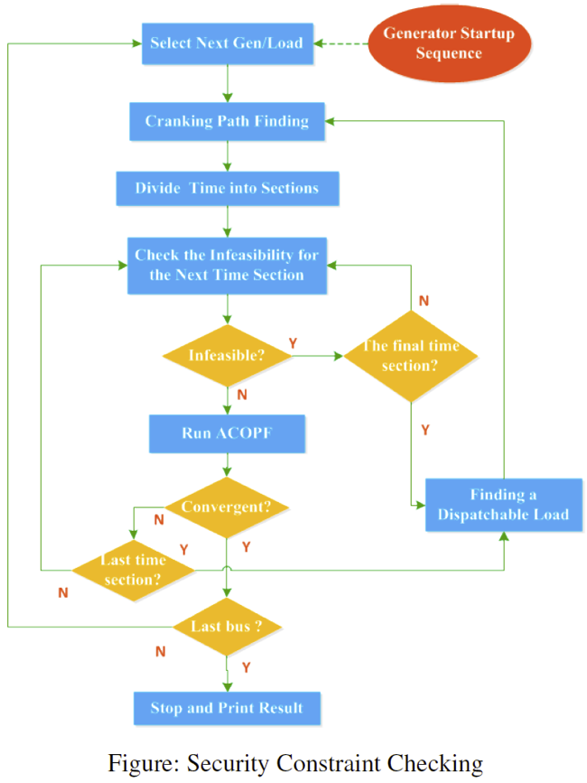

Restoration Planning and Verification Workflow
- Integrated restoration optimization model produces an initial parallel recovery plan
- Cranking path module finds transmission path to energize to crank a generator
- Transient stability and static security constraints are validated by simulation
- Three options to fix a restoration plan
- Add compensation devices
- Switch to another cranking path
- Re-optimize startup sequences
- If a restoration plan cannot be repaired (or sacrifice too much solution quality), remove current plan from solution space and resolve the integrated restoration optimization model

Restoration Planning
We can use the package by declaring it:
using EGRIPFirst, we need to tell the package where our problem data is:
dir_case_network = "./case39.m"
dir_case_blackstart = "./BS_generator.csv"Second, we need to tell the package where our results are going to be stored:
dir_case_result = "./results/"Then, we define the restoration duration and time steps:
t_final = 500
t_step = 250Once everything is ready, we can call solve_restoration function to solve the problem:
solve_restoration(dir_case_network, dir_case_blackstart, dir_case_result, t_final, t_step)Part of the results will be printed once the algorithm terminates.
Line energization:
stage 1.0:
stage 2.0:
Generator energization:
stage 1.0: 39
stage 2.0:
Bus energization:
stage 1.0: 39
stage 2.0:Detailed results will be stored in results folder under the directory containing the case file.
Restoration Plan Verification
This process consists of two steps. The first step is to generate restoration plan file (an event list) using the function generateRestorationPlanFromOpt. We need the following inputs:
optResPath: The path containing the optimized restoration plan resultoutFileName: the name of the restoration plan file to be generateddataFile: The name of the associated system data file (PSAT format, .m)dataPath(optional): the path of the datafileOptions(optional): extra options
The function will output exitflag, which 1 means success and fail otherwise. The function can be called using the following command:
generateRestorationPlanFromOpt('D:\Box Sync\Blackstart_data\Blackstart_data\','restoration_plan_test_039.m','d_datane_39_mod_PQ_3')
Once the event list is generated, we can run the simulation using the function runDynamicSimulation. We need the following inputs:
dataFile: The name of the associated system data file (PSAT format, .m)restSettingFile: the name of the restoration plan filedataPath(optional): the path of the datafileOptions(optional): extra options
There will be two outpus:
exitflag=1: run the whole simulation, otherwise: DSA did not finish all the simulationmsg: detailed message
The function can be called using the following command:
[flag,msg]=runDynamicSimulation('d_datane_39_mod_PQ_3','restoration_plan_test_039')
Once the simulation is completed, we could load the simulation data:
Load the *_simp.mat result file (located in ./restoration/)
and plot the results:
plotCurves(1,t,stateCurve,SysDataBase,’variableName’)
The results of the IEEE 39-bus system are shown below.